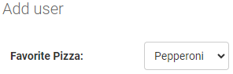
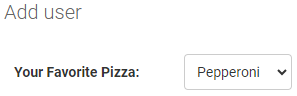

--FieldOptions--
null, blank
by default all fields are required to make it nullable use null and blank together.
name = models.CharField(max_length=30, null=True, blank=True)

choices
class User(models.Model):
    PEPPERONI = "PEP"
    CHEESE = "CHE" 
    MARGHERITA = "MAR"
    PIZZA_LIST = [
        (PEPPERONI, "Pepperoni"),
        (CHEESE, "Cheese"),
        (MARGHERITA, "Margherita"),
    ]
    favorite_pizza = models.CharField(
        max_length=3,
        choices=PIZZA_LIST,
        )
the favorite_pizza is choices so, user have to choose from those 3 types
(PEPPERONI, "Pepperoni") the display value is Pepperoni otherwise, the stored value in database is PEP

default
favorite_pizza = models.CharField(
        max_length=3,
        choices=PIZZA_LIST,
        default = PEPPERONI
        )
name = models.CharField(max_length=30, null=True, blank=True, default="khaled")
default will give the column a initial value that can be changed

help_text
email = models.EmailField(help_text="Enter valid email")
help text will help user to understand the field or what should enter

unique
email = models.EmailField(unique=True)
unique will prevent data from being repeated
if user register with example@gmail.com then other user try to register with the same email.
it will appear error like email is already exists.

verbose_name
how the field will be display for people and admin page
before:

after:
